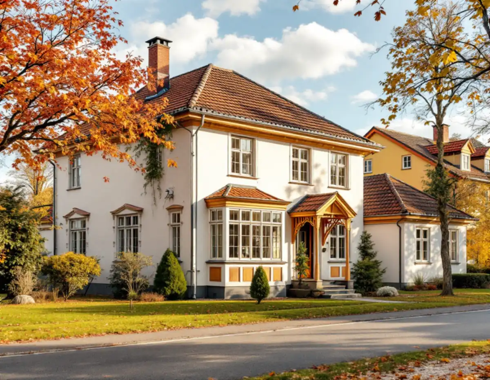
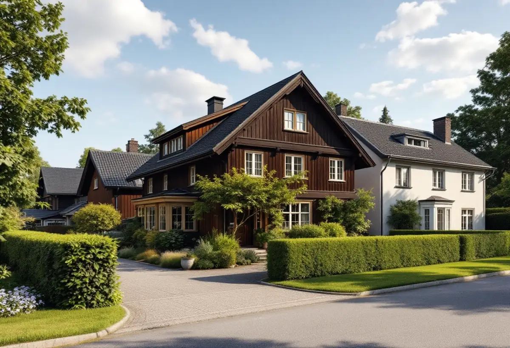
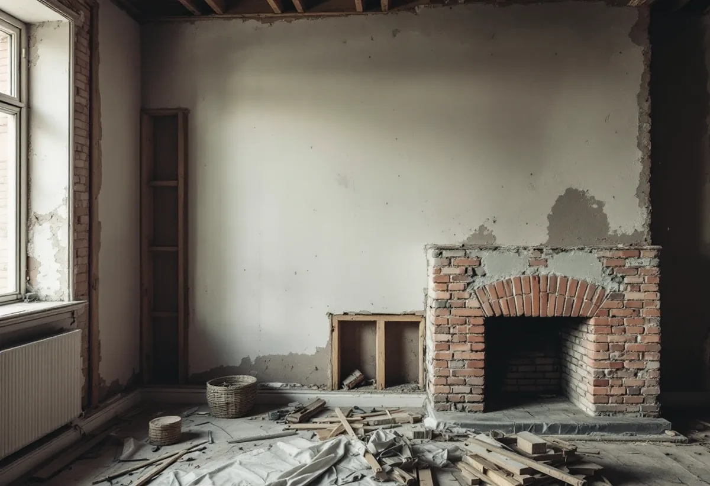

Ritningar
Husets ritningar hämtas och jämförs med huset.
Villorna i Solhem, Bromsten, Flysta och Sundby är från många olika decennier, och i en äldre villa kan stommen se annorlunda ut än ritningarna. Geal Entreprenad AB totalrenoverar villor i Spånga och tar reda på vad som bär innan någon vägg rivs.

Stadens strategi för småhus- och villaområden berättar att stationssamhällena vid järnvägen på 1910-talet växte till större samhällen, och att Spånga var ett av dem som fick status som municipalsamhälle. Solhem, Bromsten, Flysta och Sundby räknas till villastäderna. I Solhem fanns stora tomter där bara en tiondel av tomten fick bebyggas, och Solhem är i strategins tabell markerat som kulturhistoriskt värdefull miljö.
Enligt stadens områdesfakta för 2025 finns 1 946 småhus med äganderätt i Solhem, 916 i Bromsten, 657 i Flysta och 525 i Sundby. Villastäderna har förtätats successivt genom tomtdelningar. När nya planer togs fram för delar av dem på 1930-talet blev tomterna 700–1 000 kvadratmeter, och senare har hus tillkommit på tomter kring 600 kvadratmeter, så hus från olika tider står sida vid sida.

Stockholms stad kräver anmälan och startbesked för ändringar som påverkar byggnadens bärande konstruktion. Du kan logga in med bank-id och se husets ritningar för att förstå dess principiella konstruktion, men staden påpekar att ritningar kan vara ofullständiga och att det inte är säkert att de som byggde följde dem. Staden kan inte bedöma åt dig om ändringen påverkar bärande konstruktion och råder dig att kontakta en konstruktör.
I en villa som byggts om flera gånger är det just där överraskningarna finns. Vi öppnar på några ställen innan planlösningen bestäms och tar in en konstruktör när en bärande vägg ska bort eller ett bjälklag ska bära mer.
Stockholms stad beskriver hur äldre hus ofta har självdragsventilation, med en panna i källaren och en skorsten genom huset som mynnar över taknocken. På vintern sugs luften in genom ventiler, vädringsfönster och otätheter och ut via skorstenskanalen i kök och badrum, och problem uppstår ofta på sommaren när temperaturen ute och inne är densamma och draget uteblir.
Systemet medger ingen rening av tilluften och ingen värmeåtervinning. När huset tätas i en totalrenovering ändras förutsättningarna för självdraget, och installation eller väsentlig ändring av ventilationen kräver anmälan. Vi planerar ventilationen tillsammans med fönster och isolering.
Staden skriver att ändringar av planlösningen kan kräva anmälan när de påverkar tekniska egenskapskrav som bärförmåga, brandskydd, ventilation eller vatten och avlopp, och att du behöver kontakta en konsult om du är osäker.
Vi gör arbetet i ordningen stomme, el och VVS, isolering och ventilation, ytskikt. Om villans badrum kan du läsa under badrumsrenovering i Spånga, om köket under köksrenovering i Spånga och om tjänsten i stort under villarenovering.
Strategin beskriver villastäderna som privat organiserade, med en brokigare bebyggelse än i stadens egnahemsområden och hus som är individuellt utformade. Trä var det dominerande fasadmaterialet, även om puts förekom, och glasverandor, takkupor, snickarglädje och färgsättning gav variationen som syns än i dag. Husen var som regel indragna från gatan med en grön förgård.
Ändras något utvändigt i en totalrenovering, som fönster, takkupor eller fasadmaterial, kontrollerar vi Stadsmuseets karta och detaljplanen först. Solhem är markerat som kulturhistoriskt värdefull miljö i strategins tabell.

Husets ritningar hämtas och jämförs med huset.
Stomme, bjälklag, skorsten och installationer undersöks.
Stomme, installationer, ventilation och ytskikt står var för sig.
Beräkningar och anmälan vid bärande ändringar och ny ventilation.
Stomme, el, VVS, isolering, ventilation och ytskikt i rätt ordning.
Vi går igenom huset och lämnar dokumentationen.
Att riva väggar och bygga om planlösningen i ett hus, arbeta med tilläggsisolering och installera och rengöra ventilation räknas som rotarbete på småhus enligt Skatteverket. Är bostaden yngre än fem år får arbetet bara återställa det ursprungliga skicket.
Avdraget är högst 30 procent av arbetskostnaden och högst 50 000 kronor per person och år. Material och resor ger inget avdrag.
Husets storlek och ålder, hur mycket av stommen som ändras, ventilationslösningen, el och VVS och vilka ytskikt du väljer. Efter ett gratis platsbesök får du ett skriftligt kostnadsförslag.
Renovera hela huset eller lägenheten.
Villarenovering →Takbyte, takbesiktning och plåtarbeten.
Takläggare i Spånga →Solhem, Bromsten, Flysta och Sundby.
Takrenovering i Spånga →Solhem, spåren och de stora tomterna.
Attefallshus i Spånga →Äldre villor, duschplats och bostadsanpassning.
Badrumsrenovering i Spånga →Riva och bygga nytt hus.
Byggföretag i Spånga →Bättra eller måla om hela villan.
Fasadmålning i Spånga →Trävillor och gruppbyggda radhus.
Fasadrenovering i Spånga →Villor, verandor och nya öppningar.
Fönsterbyte i Spånga →Villorna i Solhem.
Fönsterrenovering i Spånga →Massivt, lamell, fanér eller laminat.
Golvläggare i Spånga →Breda originalgolv och patina.
Golvslipning i Spånga →Solhem, villastäder och kök i flera lager.
Köksrenovering i Spånga →Solhems färgskala och villorna kring stationen.
Målare i Spånga →Villatak, rännor och stuprör.
Plåtslagare i Spånga →Väggar, vindar och verandor i villastäderna.
Snickare i Spånga →Solceller, radarn och Solhem.
Takbyte i Spånga →Tapet som passar husets tid.
Tapetsering i Spånga →Villastäderna, tomterna och gatan.
Tillbyggnad i Spånga →